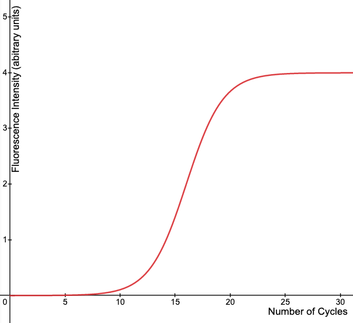

Section 1: Amplification Plot
1.5 Knowledge Check
Question 1 of 3
Suppose a qPCR is performed on a particular gene with appropriate fluorescence threshold. When the rate of gene expression increases, how would the Ct value change?
Question 2 of 3
A student performs qPCR and obtains the following amplification curve:

Which of the following is a suitable fluorescence threshold for the experiment?
Question 3 of 3
What factor does not affect Ct value of target gene?
We explain here why the chosen answer is wrong etc..